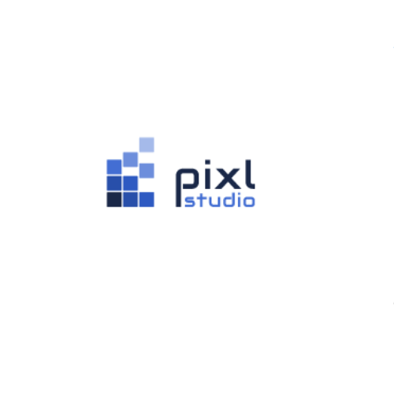
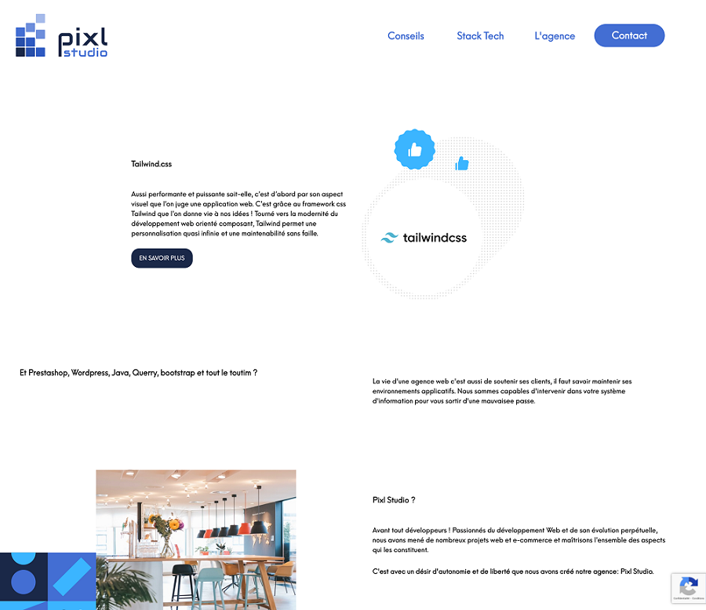
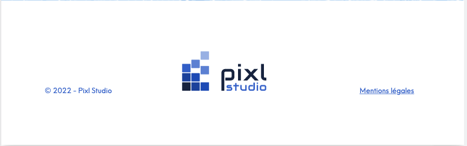
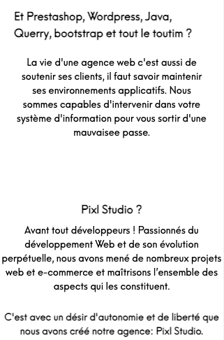
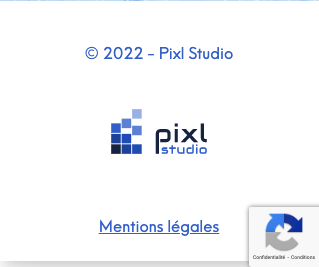
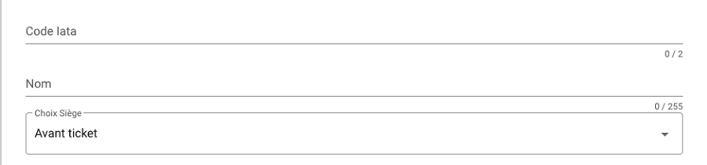
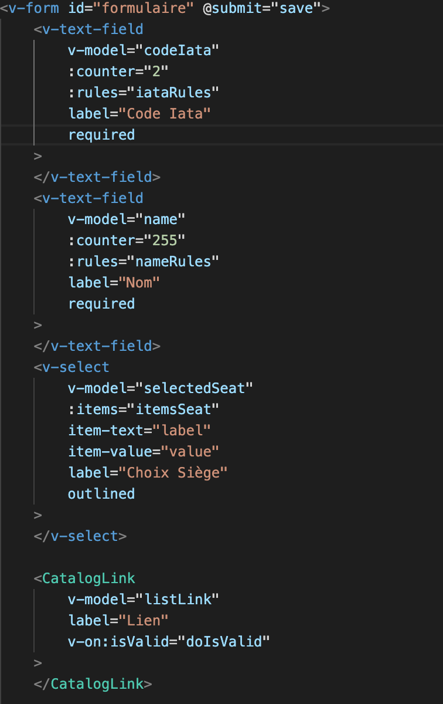
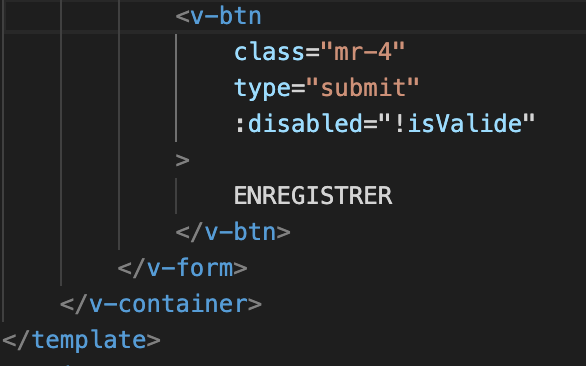
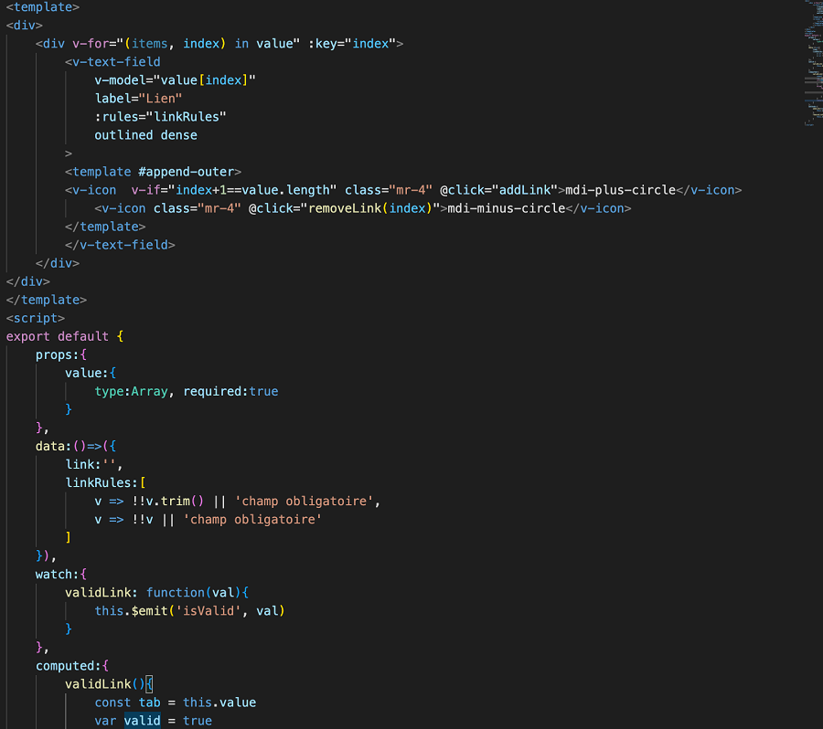

Lors de ma première, on m'a demandé d'effectuer un stage de 7 semaines afin de valider celle-ci. Je suis donc allé dans l'entreprise Pixl Studio, situer à Lyon dans le deuxième arrondissement. Cette entreprise crée et fournit des interfaces pour le domaine de l'hôtellerie. Durant mon stage, on m'a confié 2 missions :

Ma première mission consistait à coder et à implémenter deux éléments ainsi que le footer et de les rendre responsive du site vitrine de l'entreprise à partir d'un modèle fournis par mon tuteur. Cette mission m'a amené à découvrir framework CSS, tailwind. J'ai donc dû apprendre à l'utiliser en lisant la documentation et Tailwind Play.




Tout le temps de mon stage, nous avons utilisé Github pour travailler. Mon tuteur m'avait créé une branche pour que je puisse coder sans risquer de détruire le site à la moindre erreur.
Pour ma deuxième mission, on m'a demandé de créer un formulaire en utilisant du Vue js, un langage que je ne connaissais pas. Alors comme pour la mision précédente j'ai dû prendre un temps afin de me former à ce langage en lisant la documentation ainsi qu'en utilisant Vue Tutorial.



Ensuite, j'ai dû faire évoluer le formulaire en faisant en sorte que le client puisse rajouter autant de lien qu'il le souhaite.

À la fin de mon stage, le formulaire pouvait être stocké en Json quand on le validait.